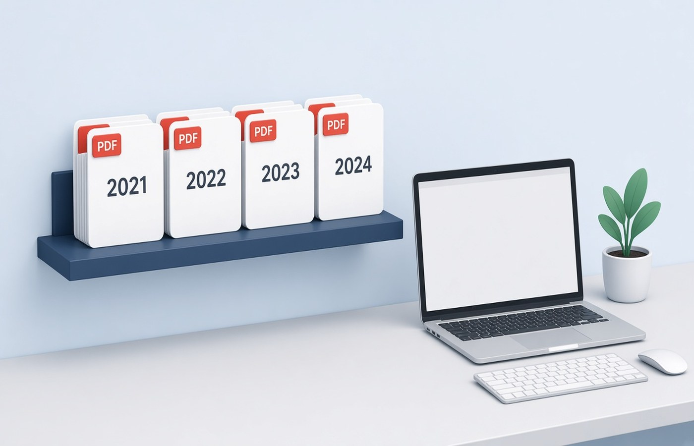

A CA office can lose a morning when last year's bank PDF sits in this year's folder, or when two clients share a scan named statements.pdf on a desktop. The fix is a folder layout you reuse for every client: one client, one assessment year, then a short list of drawers such as Bank, GST, ITR, and KYC. This is about names and what not to mix. It is not a month-end processing queue. Staff should be able to open a client cold and know where a file belongs. Keep each client's papers in that client's tree. Do not edit a figure to make a set look complete.
One client, one year, one tree
Start with the client name as the parent, then a year folder such as AY-2026-27, then the drawers. Do not make a giant Year folder that holds every client, because a drag-and-drop then drops the wrong PAN into the wrong return. Do not make a drawer called Misc and let it become the real system. If a document type is new, add a named drawer. Bank statements do not belong in KYC. Form 16 does not belong in GST. The year folder should contain only that year's working papers. Prior-year comparisons can be shortcuts, not copies that get edited by mistake.
Spell the client the same way every year. A folder called Sharma and another called R.K. Sharma will both get files. Pick the name you use on the engagement and stay with it. Inside the year, avoid personal names of staff as folder titles. People leave, and the next article clerk will not know whose desktop alias you meant. The layout is the firm's, not one person's Downloads history. Write that name once and reuse it.
- Client name, then assessment year, then drawers
- Bank, GST, ITR, and KYC kept apart
- No Misc drawer as the real filing system
- Same client spelling every year
File names a colleague can open cold
Inside a drawer, name the PDF with the period and the document, such as Bank-HDFC-Apr2026-to-Mar2027.pdf. The person who did not meet the client should still pick the right file. Avoid scan.pdf, new.pdf, and final-v7.pdf. If a client mails a file with a useless name, rename a copy into the drawer and leave their original name only if you must reply on that thread. Write the period as it appears on the statement. A file that says Q1 when the pages are July will be attached to the wrong working paper.
When a PDF holds the wrong months, split the months you need into a new file and park the long download in a Raw subfolder. Do not expect everyone to remember which pages were relevant. The file in the main drawer should be the one you would send or rely on. Password-protected bank files should be opened with the password the client gave you, then stored the way your office policy allows. If the client did not give the password, ask them. Do not strip a lock.
What not to mix in the same PDF
Do not merge two clients into one PDF, even if they are spouses, unless the paper itself is a joint document and you file it under the client the engagement names, with a note. Do not merge two years to save a mail. Do not append KYC images at the back of a bank statement because the portal wanted both on the same day. Those were two uploads. In the office tree they stay two files. Mixing is how a GST invoice set picks up someone else's bill with a similar amount.
Do not drop a folder of WhatsApp images into the return drawer and call it done. Turn the pages you need into PDFs, named and checked, and keep the chat export out of the year tree or in a clearly marked inbox that gets emptied. A photo of a screen is not a filed statement. Also do not put draft computations and the client's original PDF in one file. The original should remain the original. The computation is your work paper, stored beside it.
A local working set, then the final set
Keep an Incoming folder at the client level for unsorted mail, and empty it into the year drawers. The year folder is not the inbox. When the return is filed, you can mark a Final set as copies of the files you actually relied on, without deleting the drawers. Next year, copy the empty layout, not last year's PDFs. Pdf Buddy can split a long statement, merge a pack a portal asked for, and save that pack on the office PC. Client files should not pass through a random website to get a new file name.
This layout does not decide what the client should claim or how a return is prepared. It stops the wrong PDF from sitting in the wrong year. If a document is missing, ask the client for it. Do not recreate a bank statement or a GST return to fill a drawer. The folder only works if the pages in it are the pages the bank, the portal, or the employer issued.
Questions people actually ask
Should spouses share one client folder? Use one tree per engagement. If you file them separately, use two client folders even when the papers arrived in one mail. A joint bank statement can live in the folder of the client whose working papers cite it, with the file name showing it is joint.
Where do unsorted WhatsApp PDFs go? Put them in an Incoming folder and move a checked, renamed PDF into the right year drawer. Do not leave the chat export inside the ITR drawer. Incoming is a tray. The year tree is the record. Empty the tray each week.
Can one PDF hold the full bank download if only four months matter? Keep the full download in a Raw subfolder if you need it, and put a clearly named extract of the months you are using in the Bank drawer. People attach the file that sits in the main drawer. Make that file the right period.
Copy the same year tree for each client and keep drawers unmixed. Pdf Buddy, by Easy Peeze Tools, is a Windows desktop PDF editor that works on the PC. Client files are not uploaded to a random website. The free tier is 2 files a day. Pricing starts at ₹149. See pricing.